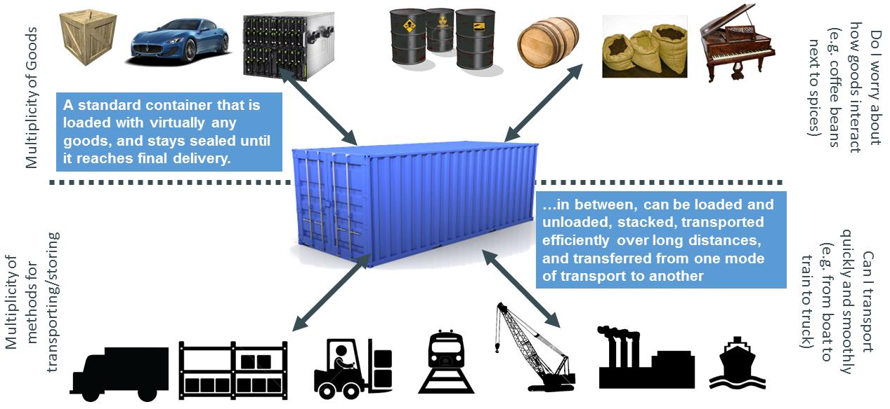

Agenda
- Quick recap on containers
- Kubernetes
- Primitives
- Cluster components
- Demo
Containers (or: why are we doing this again?)
Containers (or: why are we doing this again?)
<insert hype here>
Cloud native DevOps On-Demand Self Service Agile NoOps PaaS Microservice Infrastructure as Code
Sort of looks like this
Really looks like this
The Twelve-Factor AppSoftware container benefits 1/3
- Agile application creation and deployment
- Continuous development, integration, and deployment
- Dev and Ops separation of concerns
Software container benefits 2/3
- Environmental consistency across development, testing, and production
- Cloud and OS distribution portability
- Application-centric management
Software container benefits 3/3
- Loosely coupled, distributed, elastic, liberated micro-services
- Resource isolation
- Resource utilization

Containers (or: why are we doing this again?)
- IT industry maturation
- We're pretty good at shipping software
- We operate software like most other SMBs
- Infra is important too
Problem solved!
Now all we need to do is find a way to manage all of these containers...

Design parameters
Open
- Open source
- Open standards
- Open security
- No vendor lock-in
Portable and flexible
- Cloud provider agnostic
- Strong primitives
- Swappable components (that includes me)
- No vendor lock-in
Component health & maturity
- Healthy project community
- Production usage
- Third parties
Kubernetes
..or "k8s"
Container orchestrator
- Open ✔
- Portable and flexible ✔
- Healthy ✔
- Mature ✔
Standardized solutions for common problems
co-locating helper processes, mounting storage systems, distributing secrets, application health checking, replicating application instances, horizontal auto-scaling, naming and discovery, load balancing, rolling updates, resource monitoring, log collection, authn and authz. Not quite PaaS, not quite IaaS either.What does that mean?
No PaaS services (though people are building PaaS'es on top of kubernetes)No handholding.
Opinionated reference implementations are starting to show up.
See TODO list at the end...
This slide is all over the place!Yes it is
Kubernetes primitives
Pods
Running instances of applications- "Smallest schedulable unit"
- One or more containers that share the namespace/are tightly coupled
- Ephemeral!
- Namespace?
- SHM
- volumes
- IP
- hostname
Pods

Pods
apiVersion: v1
kind: Pod
metadata:
name: ptlcdebug
namespace: default
labels:
app: debug
spec:
containers:
- command:
- sleep
- "86400"
image: ubuntu:14.04
name: ubuntu
Labels & selectors
Provide a way to identify & select pods and other components.
"labels": {
"app" : "digib-imp",
"version" : "1.2.3",
"component": "frontend"
}
Services
A means of finding a running service in the cluster.- Creates a non-routable virtual IP
- Service discovery
- Environment variables
- Cluster DNS
- Expose pods outside of the cluster (use rarely)
- LoadBalancer (no!)
- NodePort
- Map services outside of the cluster
- One-up on Borg (no port brokering)
postgres.staging.svc.cluster.local

Services
apiVersion: v1
kind: Service
metadata:
name: digib-imp
namespace: develop
labels:
app: digib-imp
spec:
ports:
- port: 80
targetPort: 3000
selector:
app: digib-imp
Intermezzo
apiVersion: v1
kind: Service
metadata:
name: digib-imp
namespace: develop
labels:
app: digib-imp
spec:
ports:
- port: 80
targetPort: 3000
selector:
app: digib-imp
Intermezzo
apiVersion: v1
kind: Pod
metadata:
name: ptlcdebug
namespace: default
labels:
app: debug
spec:
containers:
- command:
- sleep
- "86400"
image: alpine:3.7
name: alpine
Replication Controller
* And replica sets are pretty similar- A little wrapper around pods
- "Make sure there are N pods with this podspec"
- Rescheduling
- Scaling
- Old way of doing updates
- Multiple release tracks
Replication Controller
apiVersion: v1
kind: ReplicationController
metadata:
name: nginx
spec:
replicas: 3
selector:
app: nginx
template:
metadata:
name: nginx
labels:
app: nginx
spec:
containers:
- name: nginx
image: nginx:1.11.0
ports:
- containerPort: 80
Deployments
- Currently in beta
- Wrapper for Replica Sets
- Rolling updates (safer)
- Rollback made easy or even automatic
- Lends well to "canary deployment" pattern
Deployments
apiVersion: extensions/v1beta1
kind: Deployment
metadata:
name: nginx-deployment
spec:
replicas: 3
template:
metadata:
labels:
app: nginx
spec:
containers:
- name: nginx
image: nginx:1.11.0
ports:
- containerPort: 80
Ingress
- Specifies how to get to services from outside of the cluster
- "Single" point of entry
- Manipulate (tag, secure, ..) incoming traffic here
- Scan/monitor application responses here!
Ingress
apiVersion: extensions/v1beta1
kind: Ingress
metadata:
name: test
spec:
rules:
- host: foo.bar.com
http:
paths:
- path: /foo
backend:
serviceName: s1
servicePort: 80
- path: /bar
backend:
serviceName: s2
servicePort: 80
Ingress Controller
Yup, it's a proxy..on steroids
- NGINX (but interchangeable)
- Little controller that updates nginx.conf with cluster state
- SSL offloader
- X-Request-Id
- Unified log format
- Auth, filtering, etc
- Very nice example of k8s native service
Secrets
- Simple primitive
- Mount into FS path or environment
- Secrets never hit a disk
- Separate secrets from deployment specifications
- Backend is probably going to be swapped
ConfigMap
- Simple primitive
- Mount into FS path or environment
- Separate ultra fluid params from deployment specifications
- Example: nginx ingress controller
And many more..
(demo if we're on schedule..)Volumes Namespace Annotations Service Account DaemonSet Jobs StatefulSet Persistent volumes Horizontal Pod Autoscaling Resource quotas Extentions
Kubernetes cluster
(or: the stuff thats powering kubernetes)
CoreOS
- Highly specialized Linux distribution
- Kernel
- Docker, rkt
- etcd
- systemd
- Rolling release model (stable, beta, alpha)
- Automatic updates are encouraged (but feels a little too wild for me)
etcd
- Distributed consistent key/value store
- Unelected "winner" in k/v market :-)
- Database engine for kubernetes
- Talk about removing events storage from etcd
calico
- Overlay network (VXLAN)
- Enables pods to directly communicate with each other
- Decentralized firewall
Nodes
Used to be "minions" :-)- kubelet
- kube-proxy
- fluentd
- cadvisor
- container engine (currently docker)
- Actually using rkt for kubernetes components (hyperkube)
Master(s)
- apiserver
- controller manager
- schedulers

When do we get to the *&!$# demo?!
NOW!
Featured:
- Gitlab
- Kibana
- Grafana
TODO

The management summary
- Security evaluation
- Operational processes
- (Stress) testing
Security
No system helps better with security, but we still have to cover some ground- Network isolation
- Enable and use authorization
- Updating components needs to be routine work
- Underlying infrastructure assumed secure (Cloud infra, Container OS)
Operations
- Offsite backups (and periodic testing of said backups)
- Procedures (documentation...)
- Further chaos-monkey proofing
Change in mindset about "operations"
#NoOps
#NoDevs
Reality: we're all doing ops work.